Au Nord du Sénégal, l’ancienne capitale de l’Afrique Occidentale Française est devenue la métropole de la Région du Fleuve, dont elle occupe l’île principale. Aux confins de l’Océan, du Sahara et de la brousse, Saint-Louis fut toujours la meilleure introduction à la découverte de l’Afrique. Célèbre étape d’abord des navires européens de la Traite, puis de l’aéropostale de Mermoz, l’île conserve d’importants témoignages de son prestigieux passé. L’île Saint-Louis fut fondée en 1659 par le normand Louis Caullier. Elle est située au Nord du Sénégal sur le fleuve du même nom, à une trentaine de kilomètres de l’embouchure, au bord de l’Océan Atlantique tout près de la frontière avec la Mauritanie. Son nom lui a été donné par les Français en l’honneur de leur Roi du même nom, Louis XIV. Saint-Louis est la plus ancienne ville créée par les Européens sur la côte occidentale d’Afrique. Elle fut Capitale de l’Afrique Occidentale Française (AOF) de 1895 à 1902. A l’époque l’AOF comprenait le Sénégal, la Mauritanie, le Soudan, la Guinée et la Côte d’Ivoire. Capitale du Sénégal jusqu’en 1957. Capitale de la Mauritanie de 1920 à 1960. “Capitale du Nord”, “capitale intellectuelle du Sénégal”, “capitale du bon goût” depuis toujours…
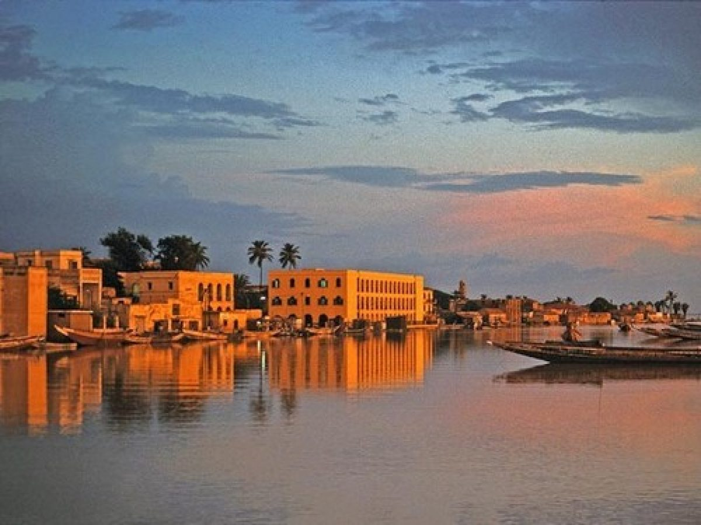 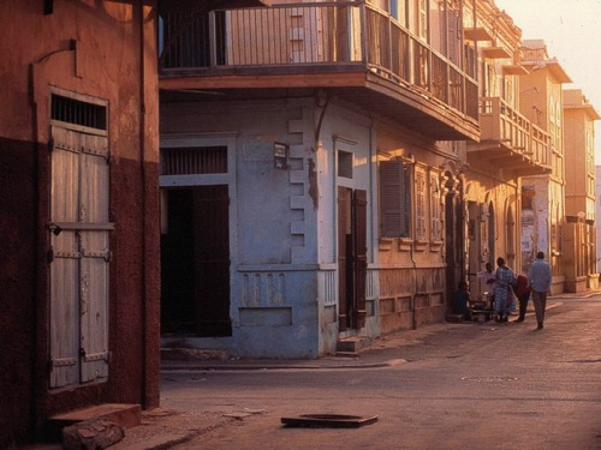 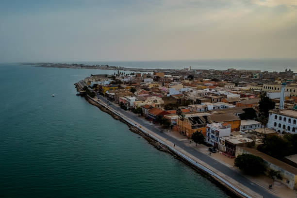Lorsque l’on enjambe le pont Faidherbe l’on découvre en plus d’une société dont les manières d’être et la convivialité sont si singulières, un patrimoine exceptionnel d’édifices, témoins de l’histoire glorieuse de la vieille cité. Ouvrage métallique de 507m de long et de 10,50 m de large, le pont est composé de 7 travées en arches dont la deuxième à partir de l’île est conçue pour pivoter autour d’un axe fixe afin de laisser passer les navires. La chaussée centrale est bordée de deux trottoirs piétonniers. Vieux d’une centaine d’années, le pont fut inauguré le 19 octobre 1897.
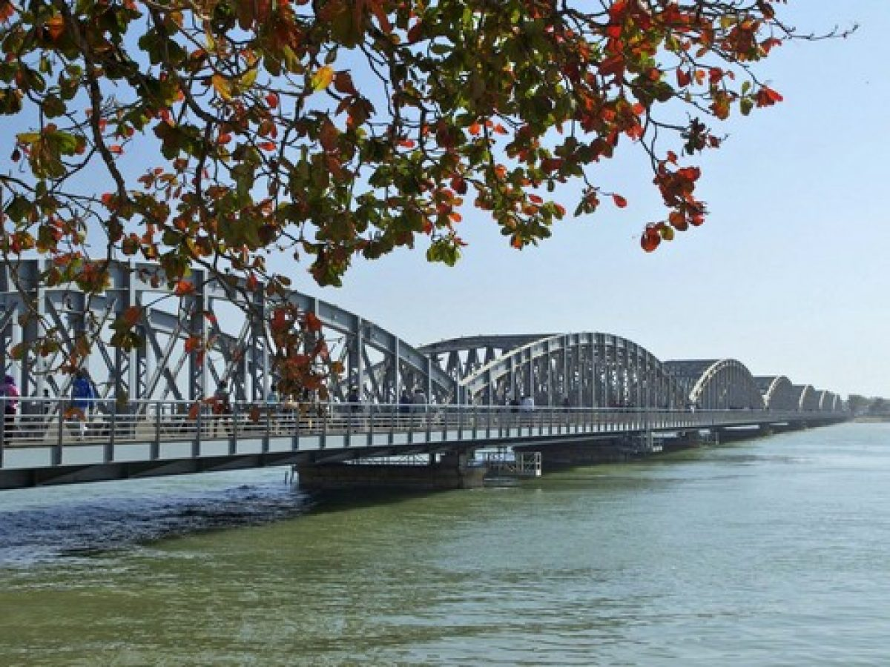 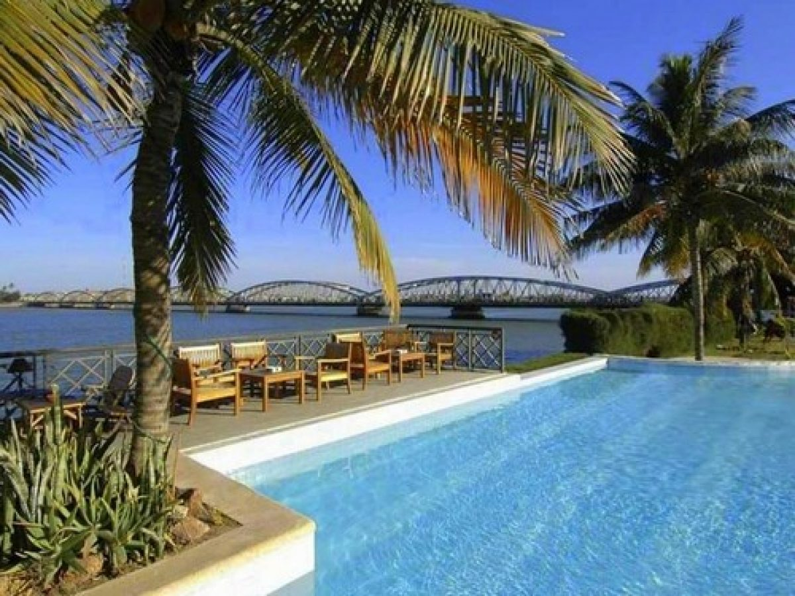 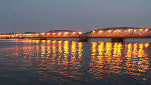Lorsque l’on arrive dans l’île en descendant du pont Faidherbe, la vue est remplie par un bloc d’édifices, communément appelé Gouvernance. De l’ancien fort colonial, subsistent encore des murs à la base très épaisse, vestiges des premiers contreforts, visibles de la rue Milles Lacroix. A l’Ouest, la Gouvernance s’ouvre sur une place ombragée portant le nom du Gouverneur Faidherbe dont la statue trône, imperturbable, dans le jardin. La place Faidherbe, d’abord appelée la Savane, ensuite place d’Orléans, bordée par les casernes Rognât Nord et Sud (1837) et comme veillant sur tout cela, Louis Léon Faidherbe, Gouverneur du Sénégal de 1854 à 1864. (Sur cette place, le Général Blanchot célébra la victoire d’Austerlitz). De part et d’autre de cette place centrale les deux quartiers de l’île : le Sud ou Sindoné et le Nord ou Lodo. Au fil du parcours vous pouvez découvrir des édifices anciens à l’architecture typique. Dans le Sud, première zone d’implantation européenne appelée également kertian (du nom chrétien), se trouve la cathédrale. Consacrée en 1828, elle fut la première église de l’Afrique de l’Ouest. Vous pourrez admirer sa façade néoclassique, son porche avancé et son fronton surmonté d’une statue de Saint-Louis. Sur le même alignement vers l’Ouest, l’ancienne école des Frères Ploërmel (1841), devenue au début du siècle établissement Peyrissac, conserve encore ses façades d’époque.
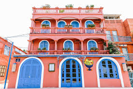 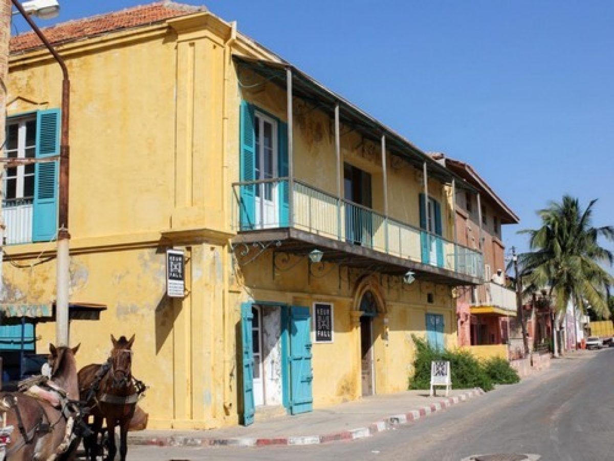 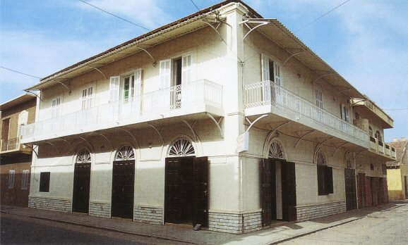 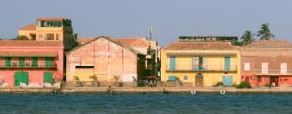Créé en 1971, le Parc National des oiseaux du Djoudj (PNOD) est classé depuis 1981 en au Patrimoine Mondial par l’Unesco. Situé à une soixantaine de kilomètres au nord de Saint-Louis par la nationale 2, dans le delta du Sénégal au Sahel, le Parc du Djoudj est une succession de zones humides à eaux douces ou saumâtres, savane sahélienne avec de nombreux canaux, lacs, bassins et marécages… D’une superficie de 16 000 hectares, 395 espèces d’oiseaux (soient près de trois millions d’oiseaux) y sont recensées ce qui en fait la 3ème réserve ornithologique mondiale !
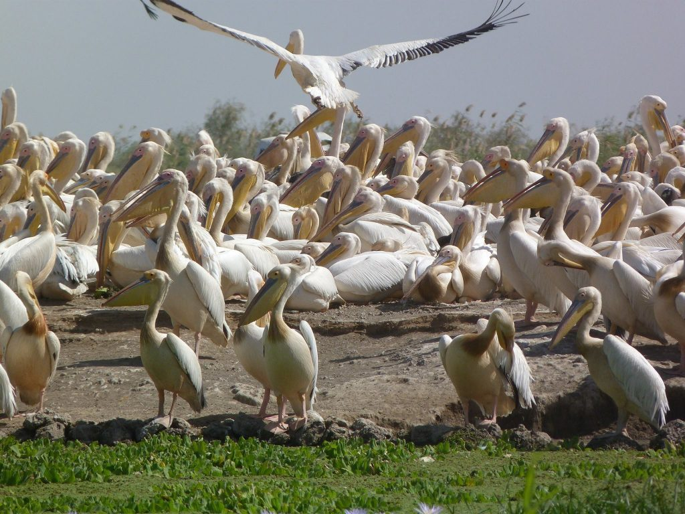 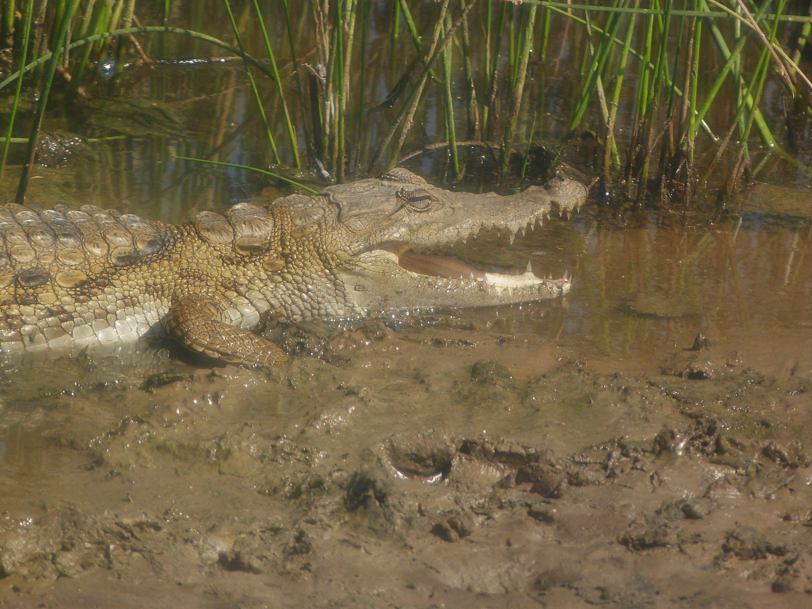 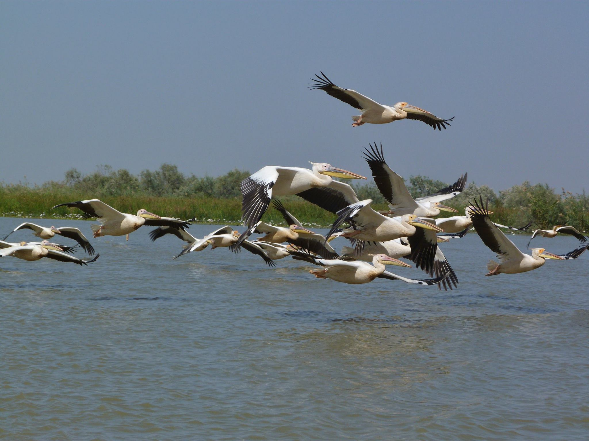 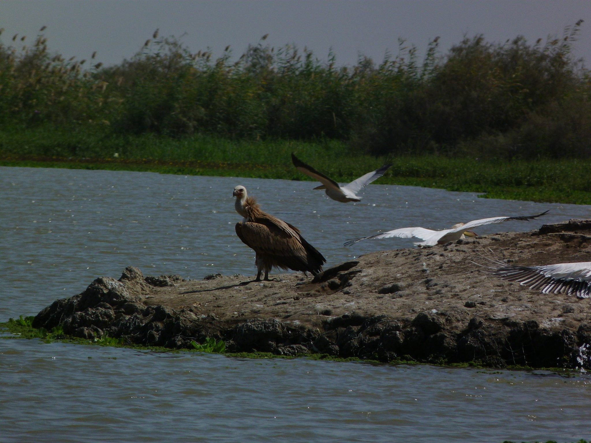La réserve spéciale de faune de Guembeul est un réserve naturelle privée, située à 10km au sud de Saint-Louis. Créée en 1983, la réserve de Guembeul fut classée par la convention de Ramsar en 1986. D’une surface de 720 ha dont une partie est constituée par un lac de 200 ha, elle est entourée d’une clôture périphérique de 12 km, qui a également favorisé la régénération des savanes à Acacia. Les eaux saumâtres des lagunes sont contrôlées par un système de vannes hydrauliques. La réserve de Guembeul abrite une faune en voie d’extinction. On y trouve : des tortues géantes appelées tortues sillonnées, qui peuvent vivre plus de 100 ans, des gazelles dama offertes à la réserve par l’Etat d’Israël en vue de leur réintroduction dans le milieu sahélien du Ferlo, des oryx dammah, des lièvres, des phacochères, des renards pâles, des singes rouges (patas), des écureuils.Moins nombreuses qu’au Parc national du Djoudj, 200 espèces d’oiseaux y sont cependant présentes, entre autres :des flamants roses (Phoenicopterus ruber roseus), des barges à queue noire (Limosa limosa), des spatules d’Europe (Platalea leucorodia), des goélands railleurs (Larus genei), des bécasseaux minute (Calidris minuta). La réserve est connue pour être le plus grand site de nidification d’avocettes (Recurvirostra avosetta) du Sénégal. 124 de ces espèces sont protégées par la convention de Berne et celle de Bonn. De petite taille et d’accès facile, la réserve peut s’explorer à pied.
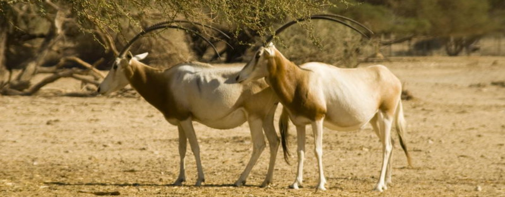 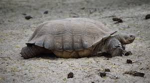 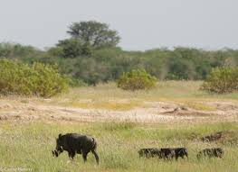 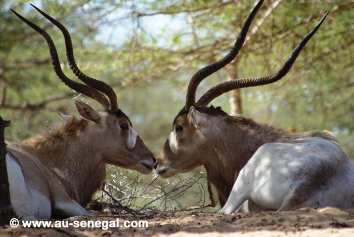